Реальні фотографії занурення паль, буріння свердловин, статичних випробувань та роботи техніки ТОВ «Промспецбуд» на об'єктах по всій Україні.
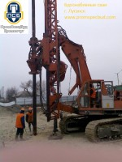

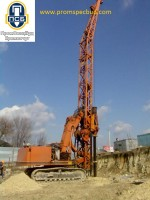
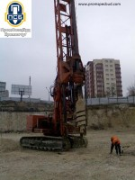

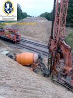

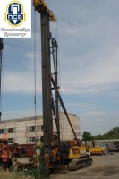

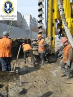


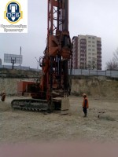


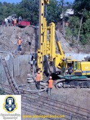
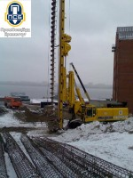

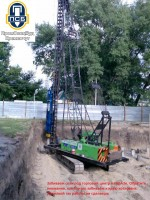

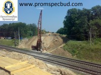

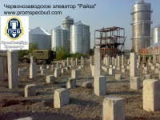


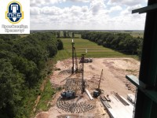


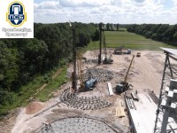
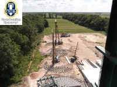
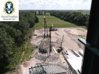


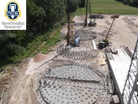

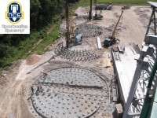

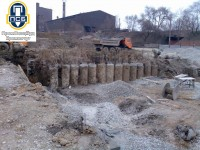


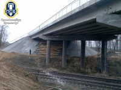


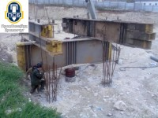

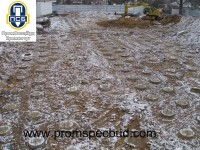
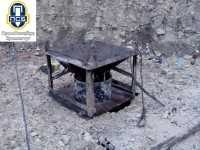

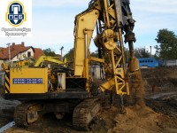
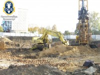
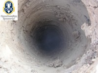

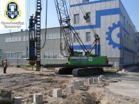
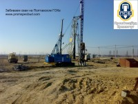
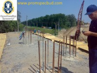

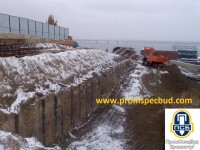
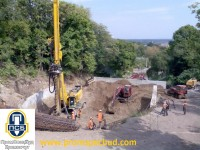
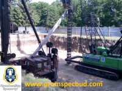

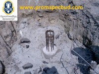

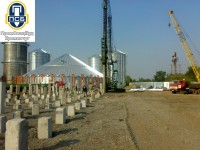

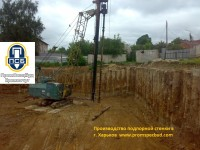


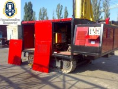

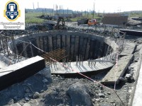
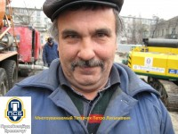